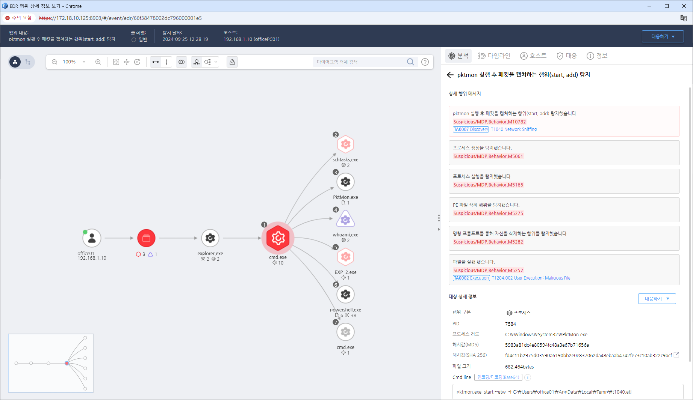

T1040.000.05 네트워크 스니핑
D3FEND
MITRE ATT&CK 액션을 기준으로 대응 방안을 작성
Detection
- Action = "CreateProcess" AND
- TargetFileCompanyName "Microsoft Coporation" AND
- TargetFileInternalName "pktmon.exe" AND
- TargetFileOriginalFileName "pktmon.exe" AND
- TargetCmdLine "start" OR "add"
Detection(EDR)

Response
- 모니터링: 네트워크 인터페이스에서 비정상적인 패킷 캡처 활동을 모니터링하고, 특히 비인가된 네트워크 스니핑 도구(Wireshark, tcpdump 등)의 사용을 탐지한다.
- 엔드포인트 보호: 패킷 캡처 도구의 설치나 사용을 탐지하는 엔드포인트 탐지 및 대응(EDR) 솔루션을 사용하여 비인가된 네트워크 스니핑 활동을 차단한다.
- 네트워크 트래픽 분석: 네트워크에서 발생하는 의심스러운 트래픽 패턴을 분석하여 스니핑 활동의 징후를 식별한다.
- 프로세스 및 파일 분석: 네트워크 인터페이스 설정을 변경하거나, 비정상적인 네트워크 분석 도구를 실행하는 프로세스를 정기적으로 감사한다.
Mitigations
네트워크 세분화
- 민감한 네트워크와 트래픽에 대한 접근을 제한하고 네트워크를 세분화하여 패킷 캡처의 위험을 줄인다.
암호화
- 네트워크 트래픽에 대해 TLS, IPSec 등 강력한 암호화를 적용하여 비인가된 패킷 캡처가 발생하더라도 민감한 데이터가 노출되지 않도록 한다.
네트워크 장비 보호
- 스위치에서 포트 미러링(Port Mirroring) 설정을 사용하여 권한이 없는 사용자가 네트워크 트래픽을 모니터링하지 못하게 한다.
권한 관리
- 네트워크 분석 도구의 사용을 제한하고, 네트워크 장비에 접근할 수 있는 계정에 대해 최소 권한 원칙을 적용한다.
보안 업데이트
- 네트워크 장비와 운영체제를 최신 상태로 유지하여 취약점을 통해 네트워크 스니핑이 가능해지지 않도록 한다.
Affected Techniques
Action 실행시 함꼐 영향을 받는 다른 Techniqes
| D3FEND |
| D3-NTA Network Traffic Analysis |